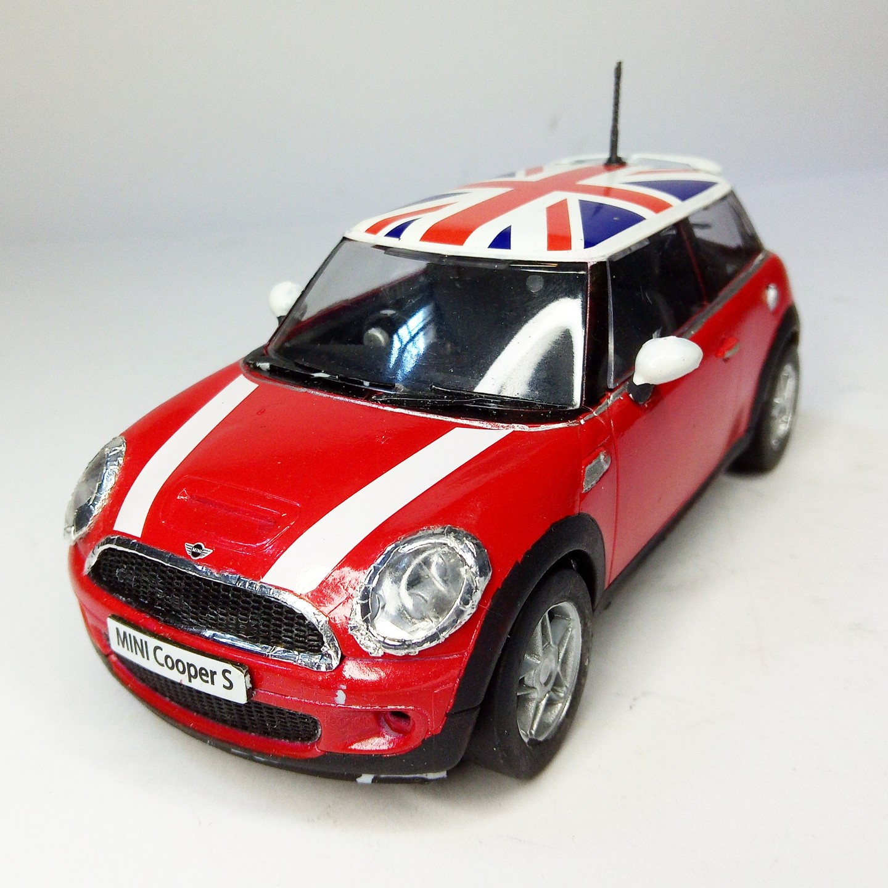
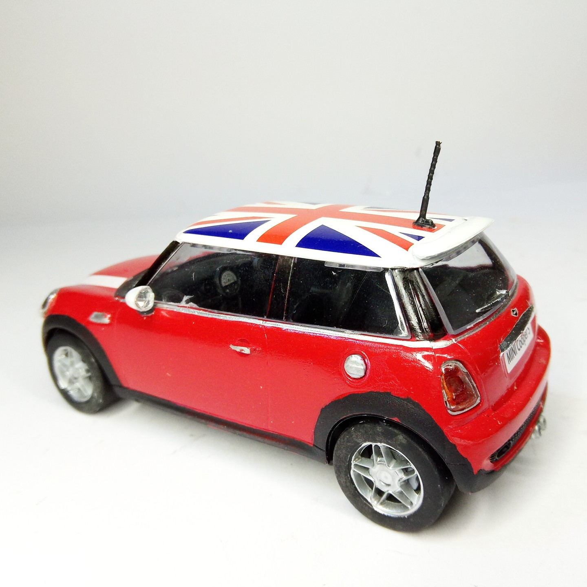

Auto e veicoli stradali · scale model archive
Mini Cooper
Mini Cooper — Kit: Airfix, Scale: 1/32. So nice with Union Jack on the roof #1/32 #Airfix #Mini

Photo gallery

English description
So nice with Union Jack on the roof
#1/32 #Airfix #Mini
Descrizione italiana
Molto graziosa con la Union Jack sul tetto.